File: 000201.gt.txt (if the image is defective, simply delete all Arabic text and the line will be excluded)

فإني لا أحل لك أن تدخل حائطي، واخذ حفنة من تراب في يده وقال: لو أعلم أني لا
File: 000202.gt.txt (if the image is defective, simply delete all Arabic text and the line will be excluded)

أصيب غيرك لضربت به وجهك. فابتدروه ليقتلوه، فقال النبي، صلعم: لا تفعلوا، فهذا
File: 000203.gt.txt (if the image is defective, simply delete all Arabic text and the line will be excluded)

الأعمى أعمى البصر والقلب. فضربه سعد بن زيد بقوس فشجه(5).
File: 000204.gt.txt (if the image is defective, simply delete all Arabic text and the line will be excluded)

وذب فرس بذنبه فأصاب كلاب سيف صاحبه، فاستله، فقال له رسول الله، صلعم:
File: 000205.gt.txt (if the image is defective, simply delete all Arabic text and the line will be excluded)
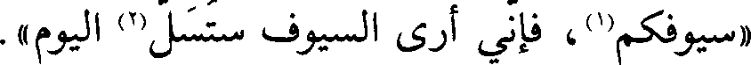
«سيوفكم(1)، فإني أرى السيوف ستسل(2) اليوم».
File: 000206.gt.txt (if the image is defective, simply delete all Arabic text and the line will be excluded)

وسار رسول الله، صلعم، حتى نزل بعدوة الوادي، وجعل ظهره وعسكره إلى أحد(3).
File: 000207.gt.txt (if the image is defective, simply delete all Arabic text and the line will be excluded)

وكان المشركون ثلاثة آلاف، منهم سبعمائة دارع، والخيل مائتي فرس، والظعن
File: 000208.gt.txt (if the image is defective, simply delete all Arabic text and the line will be excluded)

خمس عشرة امرأة، وكان المسلمون مائة دارع، ولم يكن من الخيل غير فرسين فرس
File: 000209.gt.txt (if the image is defective, simply delete all Arabic text and the line will be excluded)
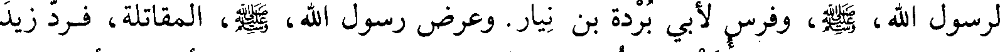
لرسول الله، صلعم، وفرس لأبي بردة بن نيار. وعرض رسول الله، صلعم، المقاتلة، فرد زيد
File: 000210.gt.txt (if the image is defective, simply delete all Arabic text and the line will be excluded)

ابن ثابت، وابن عمر، وأسيد بن حضير، والبراء بن عازب، وعرابة بن أوس، وأبا سعيد
File: 000211.gt.txt (if the image is defective, simply delete all Arabic text and the line will be excluded)
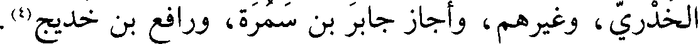
الخدري، وغيرهم، وأجاز جابر بن سمرة، ورافع بن خديج(4).
File: 000212.gt.txt (if the image is defective, simply delete all Arabic text and the line will be excluded)
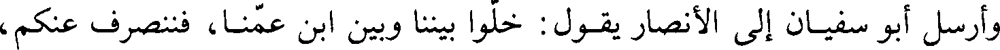
وأرسل أبو سفيان إلى الأنصار يقول: خلوا بيننا وبين ابن عمنا، فننصرف عنكم،
File: 000213.gt.txt (if the image is defective, simply delete all Arabic text and the line will be excluded)

فلا حاجة لنا إلى قتالكم. فردوا عليه بما يكره.
File: 000214.gt.txt (if the image is defective, simply delete all Arabic text and the line will be excluded)

وتعبى المشركون، فجعلوا على ميمنتهم خالد بن الوليد، وعلى ميسرتهم عكرمة بن
File: 000215.gt.txt (if the image is defective, simply delete all Arabic text and the line will be excluded)
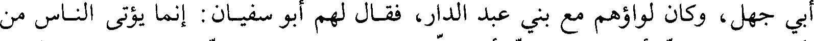
أبي جهل، وكان لواؤهم مع بني عبد الدار، فقال لهم أبو سفيان: إنما يؤتى الناس من
File: 000216.gt.txt (if the image is defective, simply delete all Arabic text and the line will be excluded)
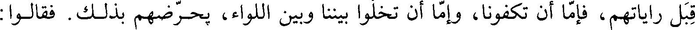
قبل راياتهم، فإما أن تكفونا، وإما أن تخلوا بيننا وبين اللواء، يحرضهم بذلك. فقالوا
File: 000217.gt.txt (if the image is defective, simply delete all Arabic text and the line will be excluded)

ستعلم إذا التقينا كيف نصنع، وذلك أراد.
File: 000218.gt.txt (if the image is defective, simply delete all Arabic text and the line will be excluded)

واستقبل رسول الله، صلى الله عليه وآله وسلم، المدينة وترك أحدا خلف ظهره، وجعل وراءه الرماة،
File: 000219.gt.txt (if the image is defective, simply delete all Arabic text and the line will be excluded)
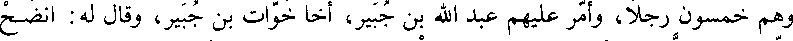
وهم خمسون رجلا، وأمر عليهم عبد الله بن جبير، أخا خوات بن جبير، وقال له: انضح
File: 000220.gt.txt (if the image is defective, simply delete all Arabic text and the line will be excluded)

عنا الخيل بالنبل لا يأتونا من خلفنا، إن كانت لنا أو علينا. وظاهر رسول
File: 000221.gt.txt (if the image is defective, simply delete all Arabic text and the line will be excluded)

الله، صلى الله عليه وآله وسلم، بين درعين(5)، وأعطى اللواء مصعب بن عمير، وأمر الزبير على الخيل ومعه
File: 000222.gt.txt (if the image is defective, simply delete all Arabic text and the line will be excluded)

المقداد، وخرج حمزة بالجيش بين يديه.
File: 000223.gt.txt (if the image is defective, simply delete all Arabic text and the line will be excluded)

وأصحابه فهزموا أبا سفيان، وخرج طلحة بن عثمان صاحب لواء المشركين وقال: يا
File: 000224.gt.txt (if the image is defective, simply delete all Arabic text and the line will be excluded)

معشر أصحاب محمد إنكم تزعمون أن الله يعجلنا بسيوفكم إلى النار، ويعجلكم بسيوفنا
File: 000225.gt.txt (if the image is defective, simply delete all Arabic text and the line will be excluded)

إلى الجنة، فهل أحد منكم يعجله سيفي إلى الجنة، أو يعجلني سيفه إلى النار؟ فبرز إليه
File: 000226.gt.txt (if the image is defective, simply delete all Arabic text and the line will be excluded)

علي بن أبي طالب، فضربه علي فقط رجله، فسقط وانكشفت عورته، فناشده الله
File: 000227.gt.txt (if the image is defective, simply delete all Arabic text and the line will be excluded)

والرحم] فتركه، فكبر رسول الله، صلى الله عليه وآله وسلم، وقال لعلي: ما منعك أن تجهز عليه؟ قال: إنه
File: 000228.gt.txt (if the image is defective, simply delete all Arabic text and the line will be excluded)
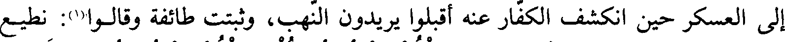
إلى العسكر حين انكشف الكفار عنه أقبلوا يريدون النهب، وثبتت طائفة وقالوا(1): نطيع
File: 000229.gt.txt (if the image is defective, simply delete all Arabic text and the line will be excluded)

رسول الله ونثبت مكاننا، فأنزل الله : (منكم من يريد الدنيا ومنكم من يريد الآخرة)(2)؛
File: 000230.gt.txt (if the image is defective, simply delete all Arabic text and the line will be excluded)
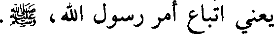
يعني اتباع أمر رسول الله، صلى الله عليه وآله وسلم.
File: 000231.gt.txt (if the image is defective, simply delete all Arabic text and the line will be excluded)

قال ابن مسعود: وما علمت أن أحدا من أصحاب رسول الله، صلى الله عليه وآله وسلم، يريد الدنيا
File: 000232.gt.txt (if the image is defective, simply delete all Arabic text and the line will be excluded)

حتى نزلت الآية(3).
File: 000233.gt.txt (if the image is defective, simply delete all Arabic text and the line will be excluded)

فلما فارق بعض الرماة مكانهم، رأى خالد بن الوليد قلة من بقي من الرماة، فحمل
File: 000234.gt.txt (if the image is defective, simply delete all Arabic text and the line will be excluded)
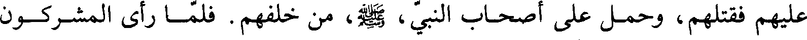
عليهم فقتلهم، وحمل على أصحاب النبي، صلي الله عليه و سلم، من خلفهم. فلما رأى المشركون
File: 000235.gt.txt (if the image is defective, simply delete all Arabic text and the line will be excluded)

خيلهم تقاتل تبادروا، فشدوا على المسلمين فهزموهم وقتلوهم.
File: 000236.gt.txt (if the image is defective, simply delete all Arabic text and the line will be excluded)

وقد كان المسلمون قتلوا أصحاب اللواء، فبقي مطروحا لا يدنو منه أحد، فأخذته
File: 000237.gt.txt (if the image is defective, simply delete all Arabic text and the line will be excluded)

عمرة بنت علقمة الحارثية فرفعته، فاجتمعت قريش حوله، وأخذه صواب فقتل عليه،
File: 000238.gt.txt (if the image is defective, simply delete all Arabic text and the line will be excluded)
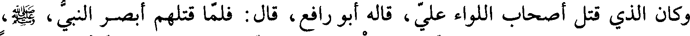
وكان الذي قتل أصحاب اللواء علي، قاله أبو رافع، قال: فلما قتلهم أبصر النبي، صلى الله عليه وآله وسلم،
File: 000239.gt.txt (if the image is defective, simply delete all Arabic text and the line will be excluded)
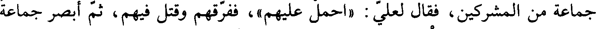
جماعة من المشركين، فقال لعلي: (احمل عليهم)، ففرقهم وقتل فيهم، ثم أبصر جماعة
File: 000240.gt.txt (if the image is defective, simply delete all Arabic text and the line will be excluded)

أخرى فقال له: ([احمل عليهم])، فحمل عليهم وفرقهم وقتل فيهم، فقال جبرائيل: يا
File: 000241.gt.txt (if the image is defective, simply delete all Arabic text and the line will be excluded)

رسول الله هذه المواساة! فقال رسول الله، صلى الله عليه وآله وسلم: (إنه مني وأنا منه). فقال جبرائيل: وأنا
File: 000242.gt.txt (if the image is defective, simply delete all Arabic text and the line will be excluded)
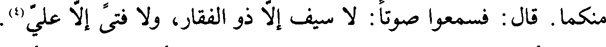
منكما. قال: فسمعوا صوتا: لا سيف إلا ذو الفقار ولا فتى إلا علي (4).
File: 000243.gt.txt (if the image is defective, simply delete all Arabic text and the line will be excluded)

وكسرت رباعية رسول الله، صلى الله عليه وآله وسلم، السفلى، وشقت شفته، وكلم في وجنته وجبهته
File: 000244.gt.txt (if the image is defective, simply delete all Arabic text and the line will be excluded)
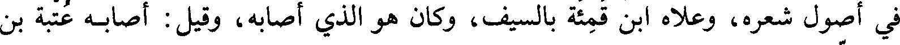
في أصول شعره، ولاه ابن قمئة بالسيف، وكان هو الذي أصابه، وقيل: أصابه عتبة بن
File: 000245.gt.txt (if the image is defective, simply delete all Arabic text and the line will be excluded)
أبي وقاص(5).
File: 000246.gt.txt (if the image is defective, simply delete all Arabic text and the line will be excluded)
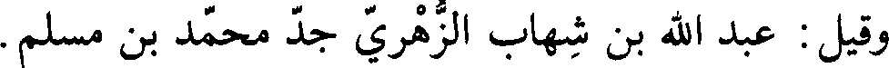
وقيل: عبد الله بن شهاب الزهري جد محمد بن المسلم.
File: 000247.gt.txt (if the image is defective, simply delete all Arabic text and the line will be excluded)

وقيل: إن عتبة بن أبي وقاص، وابن قمئة الليثي الأدرمي، من بني تيم(6)بن
File: 000248.gt.txt (if the image is defective, simply delete all Arabic text and the line will be excluded)

غالب، وكان أدرم ناقص الذقن، وأبي بن خلف الجمحي، وعبد الله بن حميد(7)
File: 000249.gt.txt (if the image is defective, simply delete all Arabic text and the line will be excluded)

الأسدي، أسد قريش، تعاقدوا على قتل رسول الله (8)، صلى الله عليه وآله وسلم؛ فأما ابن شهاب فأصاب
File: 000250.gt.txt (if the image is defective, simply delete all Arabic text and the line will be excluded)

جبهته، وأما عتبة فرماه بأربعة أحجار، فكسر رباعيته اليمنى، وشق شفته، وأما ابن قمئة(1)